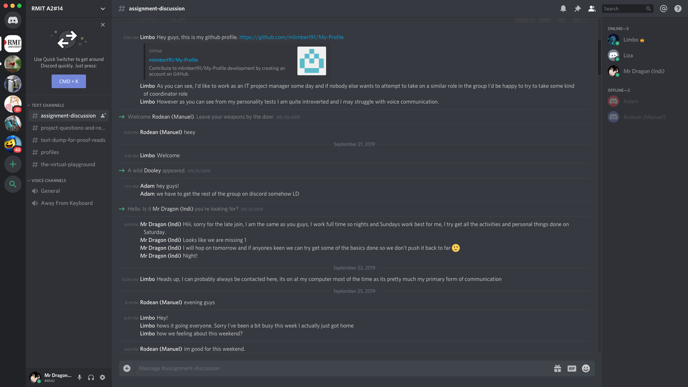

Tools (Github Setup)
Our Personal Github websites (Assignment 1)
Indi Osborne
Adam Dooley
Matthew Limbert
Manuel U Santos
Our Github setup for our 'Group Project'
For this section I will be writing it (Indi). I decided to take up the role of setting up our website and git repository as I enjoyed it a lot on Assignment 1. I felt confident in my ability to do this efficiently and make sure it would be all good to go come due date. I also took this role because I wanted us to have a website setup early into the assignment, this was based on my look into our test results which showed the majority of us were visual learners. Since I know I work better when I can see my progress I thought that my other team members with the same learning style as me would feel the same. My team was happy to give me this role. I also ensured that everyone had a link to the repository early on incase they wanted to make any changes themselves.
I made this website on a base of my personal profile (link above), and changed it to fit this project as it was bigger. The main things I cahanged to accomidate this was: Changing it from a single page website to a multi page website, making use of headers more to seperate sections on pages, a new navigation bar compared to my original one, different colour scheme.
Our Project website: https://github.com/indiosbornethorne/TeamProject1
Our Github repository: https://indiosbornethorne.github.io/TeamProject1/index.html
Your comments on how well the audit trail on the Git repository reflects your group’s
work. You will presumably only be able to do this close to the time of submission.
As I said before, I setup the website for the group. Therefore I did all the pushes. Each push I did I said what we had added to website, so if you follow the log you can see it all piece together nicely.
Screenshot of log:
Group Communication
As a group we communicated through Discord.
Discord is an application that can be accessed via the web or the app itself, which allows you to create communication servers with text and voice channels. This allowed us to make rooms for different purposes and chats, and since the application is used by most of us for personal use, it meant we were already familiar with the application which meant utilising it was easy.
Screenshot of our server setup by Matthew:

Group Activity Log
Discord Server - Matthew
Proof Reading/Editing - Matthew
Personal Profile Improvement - Matthew
Website + Github Creating - Indi
Team Profile - Indi
Tools - Indi
Industry Data - Adam + Manuel
IT Work - Adam
IT Technologies:
1 - Clouds, Services, Servers - Indi
2 - Cyber Security - Manuel
3 - Machine Learning - Matthew
4 - Robotics - Matthew
5 - Autonomous Vehicles - Adam
Project Idea - Matthew (Reworked Indi's idea from Assignment 1)
Feedback
Group Reflection